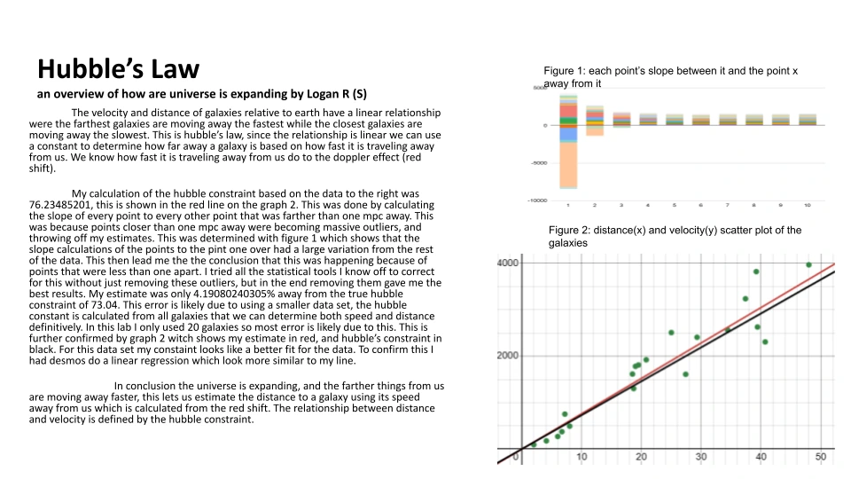
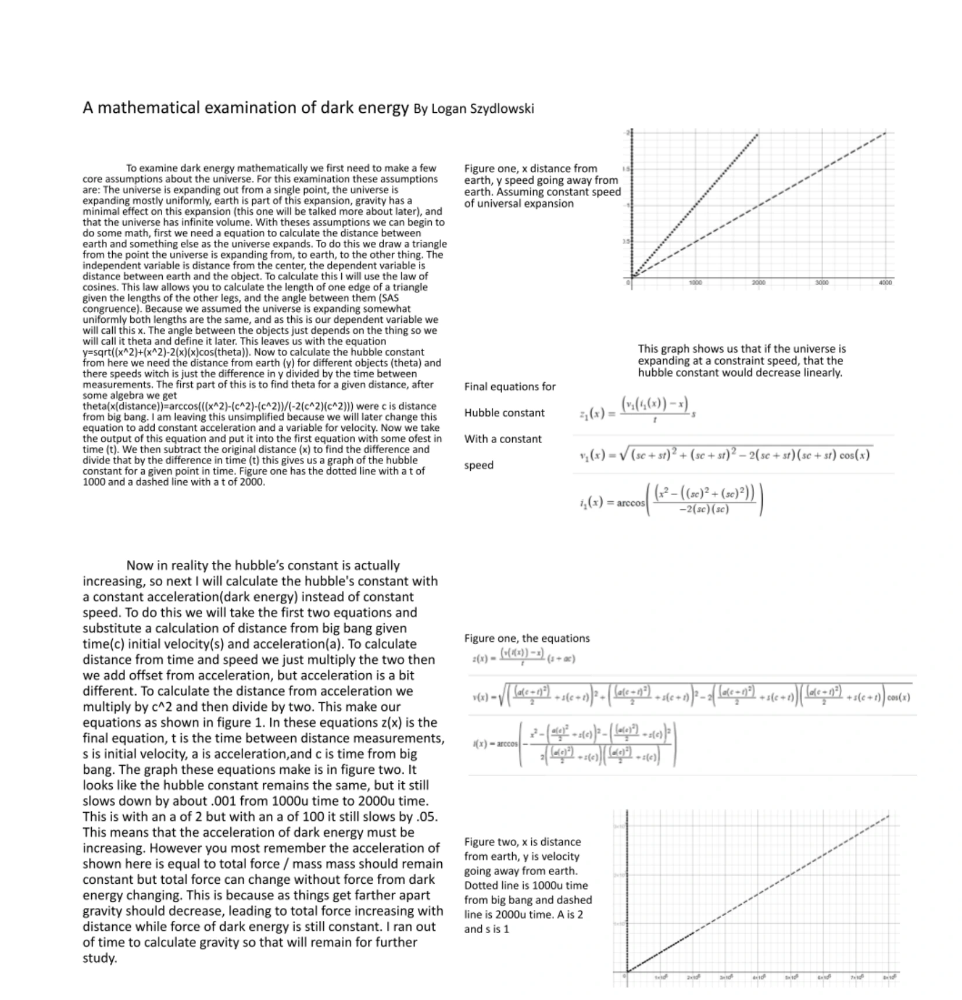

The Responsibility for Learning


These two artifacts represent the resposability for learning because they were self guided. on the right is my astronomy final project. This was a self guided asignment were I picked a topic and did the research for it. This is taking resposibility for my learning. Above is an asignment on hubbles law. In this asignment I had an idea to get a beter estimet for hubbles constant from the data, I than took resposibility for my learning by developing and testing this way.
This is importain because It teaches me how to learn on my own so I can continue to learn and grow throughout my life.